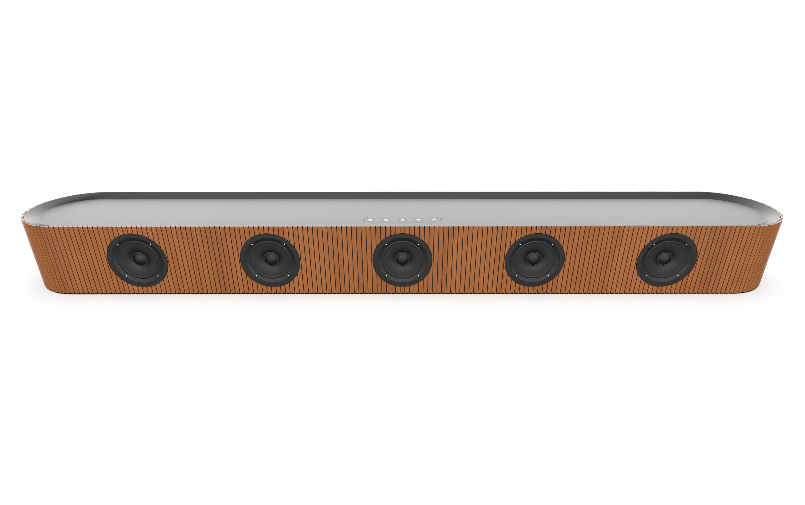
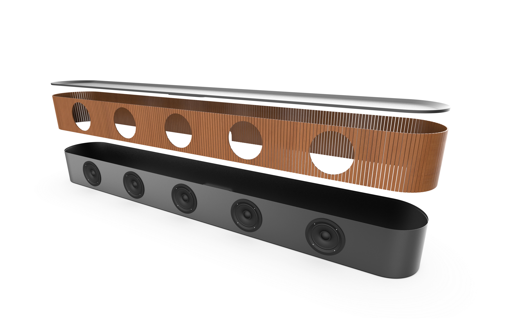
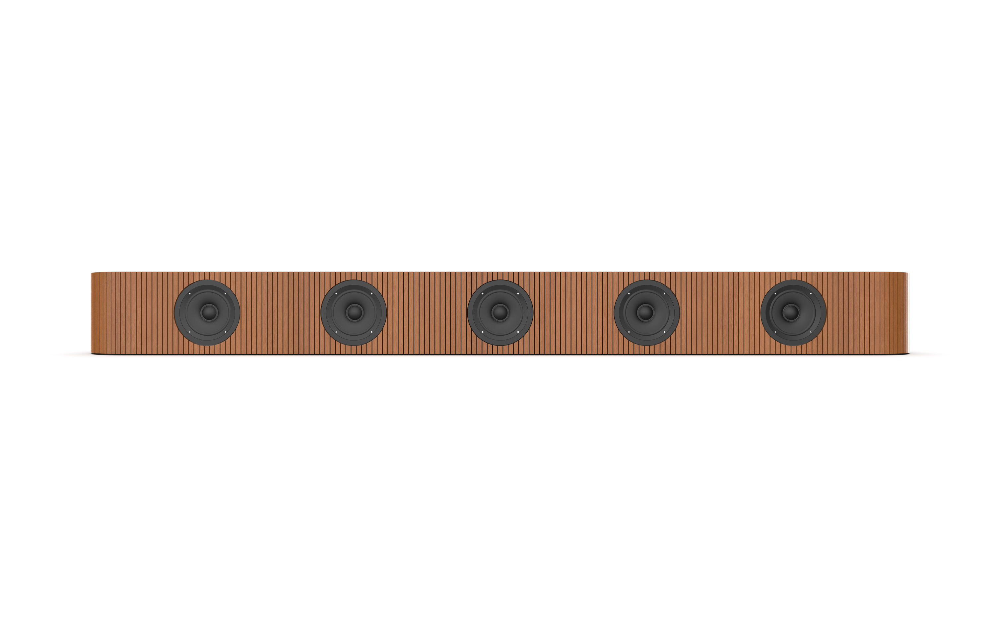
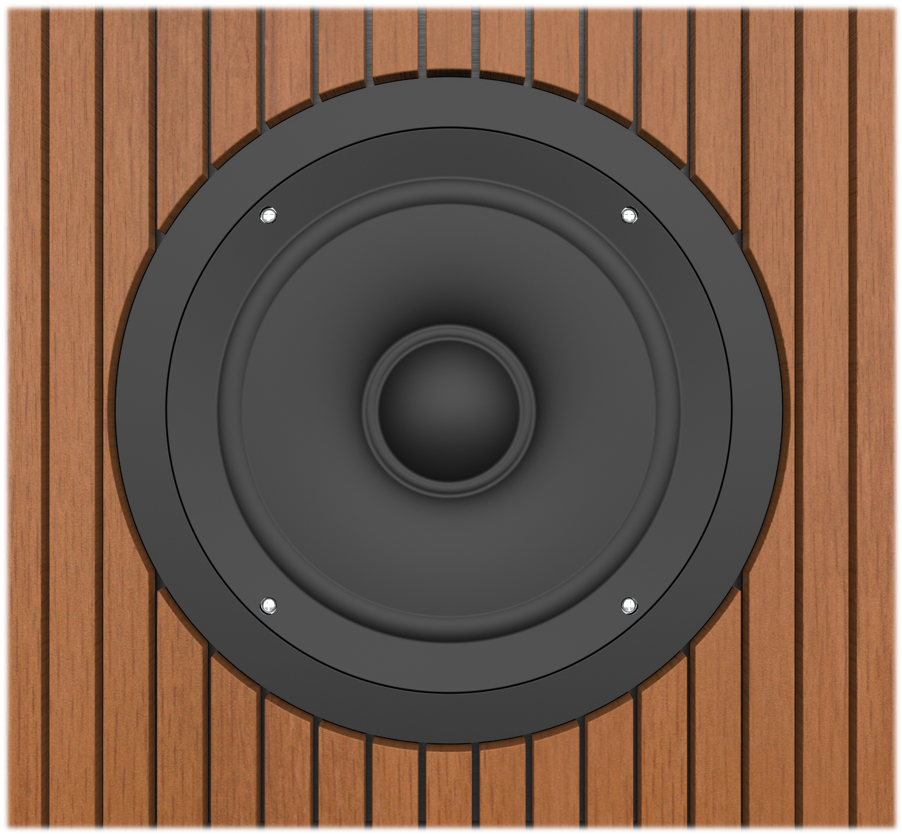
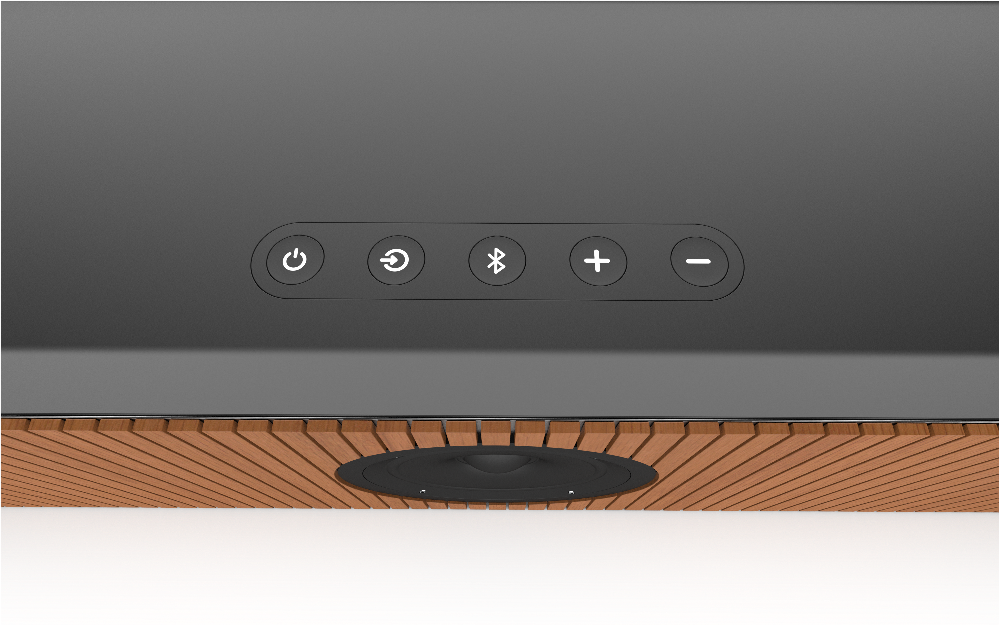
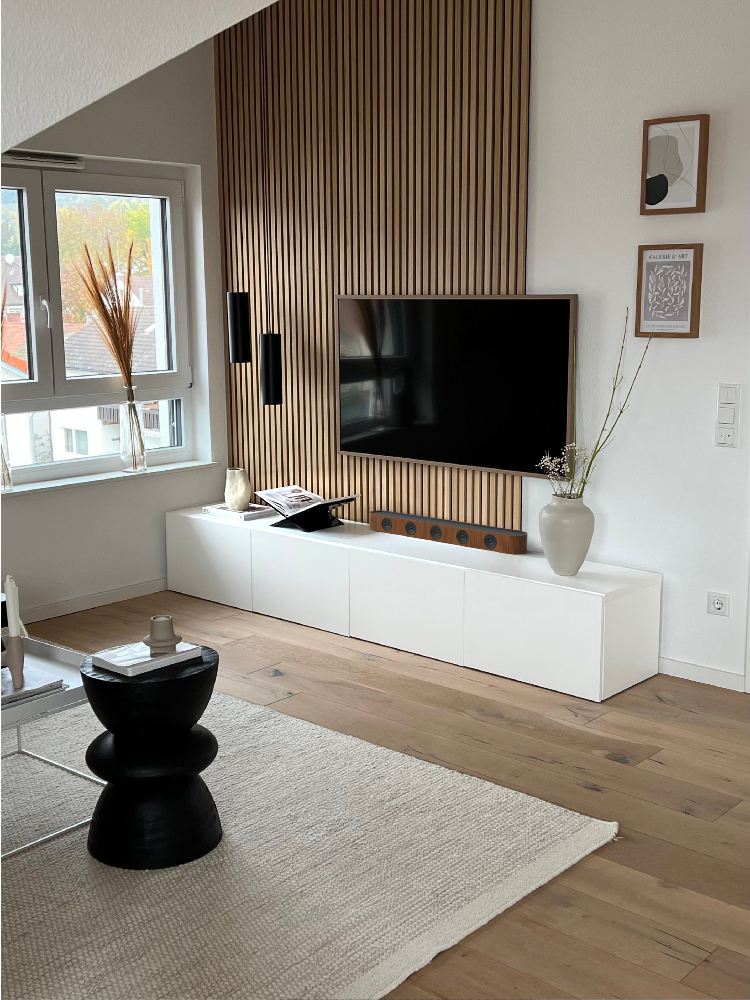
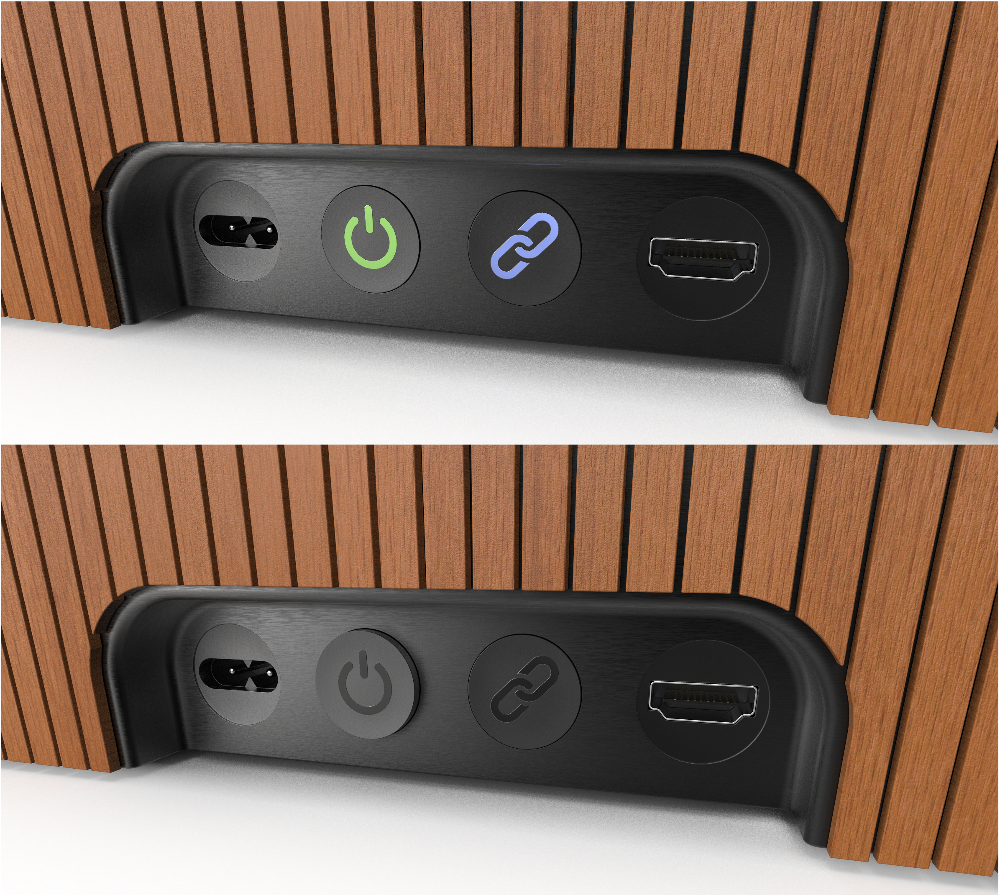

Individual university course project · 2 weeks
← Back to selected workBrand-Inspired Speaker
A soundbar concept translating Scandinavian audio design into a new product.
Warm timber, precise repetition and a restrained interface create a calm domestic object.

The project
Translating a recognizable design language without copying an existing product.
I studied the Scandinavian restraint associated with Bang & Olufsen and Sonos, then developed a speaker that could feel at home in that visual world while retaining its own identity.
The final direction uses a continuous rounded enclosure, vertical timber slats and exposed drivers. The repeated rhythm softens the long horizontal proportion, while the dark metal top and minimal controls keep the object visually quiet.
- Project type
- University course project
- Duration
- 2 weeks
- Team
- Individual
- Focus
- Form, CMF and visualization
- Tools
- Autodesk Alias and KeyShot
01 / Form & context
A warm, architectural object for the home.
The continuous enclosure and repeated timber rhythm give the speaker a strong identity at a distance and considered detail up close.

02 / Details
Repetition, material contrast and quiet controls.
Close views resolve the relationship between the timber shell, exposed drivers, inset upper surface and low-profile interface.



03 / Construction
Built as a believable sequence of layers.
The exploded view communicates how the visual concept could become a product.
The exploded view communicates the slatted shell, internal speaker body and inset upper surface, clarifying how the visual concept could become a product.

